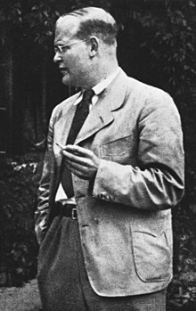

Dietrich Bonhoeffer was a German Lutheran pastor, theologian and anti-Nazi dissident who was a key founding member of the Confessing Church. His writings on Christianity's role in the secular world have become widely influential; his 1937 book The Cost of Discipleship is described as a modern classic. Apart from his theological writings, Bonhoeffer was known for his staunch resistance to the Nazi dictatorship, including vocal opposition to Adolf Hitler's euthanasia program and genocidal persecution of the Jews. He was arrested in April 1943 by the Gestapo and imprisoned at Tegel Prison for one-and-a-half years. Later, he was transferred to Flossenbürg concentration camp.
